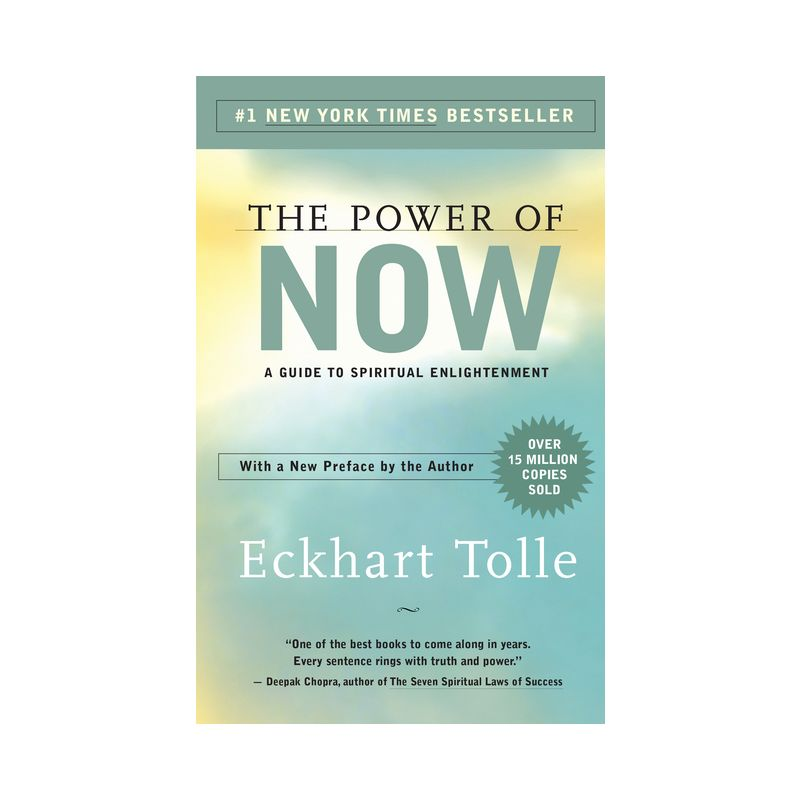

Library › Self-Improvement
The Power of Now — Summary & Key Lessons

A guide to spiritual enlightenment — you are not your mind, and the present moment is all you ever have.
📖 OPEN THE FULL INTERACTIVE BREAKDOWN →🌐 Read it in Hindi, Hinglish, Gujarati, Tamil & 22 more languages — free, with audio.
💡 The Big Idea
Tolle's message, born from his own breakdown-turned-awakening at 29: your incessant thinking is not who you are. The compulsive mental voice — judging, replaying, rehearsing, worrying — creates a false self (the ego) that lives in psychological time: past for identity, future for salvation, never now. Suffering, anxiety, and the 'pain-body' (accumulated old emotion that feeds on new drama) all require time-escape to survive; none can breathe in full presence. The way out isn't fixing the mind's content but stepping out of identification with it: watch the thinker, inhabit the body, surrender to what IS. The present moment is never unbearable — only the stories about it are.
🧠 The 5 Key Lessons
Lesson 1: You Are Not Your Mind
Chapter 1: You Are Not Your Mind
The mind's voice comments, speculates, judges, complains, and compares — nearly nonstop — and most people are so identified with it they don't know it CAN be observed. Tolle's liberation begins with a split: the moment you WATCH a thought ('there's the worry again'), a deeper awareness has appeared that is not the thought — 'the beginning of the end of involuntary thinking.' Thinking becomes a tool you pick up and put down rather than a master narrating your life. The test of mastery isn't clever thoughts; it's the ability to stop: can you have five minutes of inner silence on demand? For most people the honest answer is no — the tool is using them.
📖 Example: Tolle's own story opens the book: suicidally depressed at 29, the recurring thought 'I cannot live with myself any longer' suddenly split open — WHO cannot live with WHOM? If there's an 'I' and a 'self' it can't live with, only one can be real. The… Read the full example →
⚡ Do this: Practice thought-watching in 2-minute doses, several times daily: don't stop thoughts — label them as they pass ('planning,' 'replaying,' 'judging'). The labeling itself is the disidentification.
Lesson 2: Psychological Time Is the Disease
Chapters 2–3: Consciousness / Moving Into the Now
Clock time (appointments, planning, learning from the past) is useful; psychological time — the compulsive living IN past and future — is the mechanism of nearly all unhappiness. The formulas are exact: anxiety = present-imagining of future threat (which, when it arrives, will be a NOW you can handle); regret/resentment = carrying dead past as present identity; and 'waiting' — for the weekend, the promotion, the partner — quietly rejects the only moment that exists in favor of one that never arrives ('salvation is always around the corner' is the ego's favorite religion). Tolle's diagnostic question cuts through: 'What problem do you have RIGHT NOW — not next year, tomorrow, or five minutes from now?' The honest answer is almost always none — problems need time; the now has only situations, handleable or acceptable.
📖 Example: Tolle's traveler parable: you're on a journey and can see the whole path ahead only by torchlight — one step at a time. The mind demands the whole route illuminated before it will relax; life only ever supplies the next step. His waiting-room observation… Read the full example →
⚡ Do this: Run the diagnostic hourly for one day: 'What problem do I have at this exact moment?' Separately, catch yourself waiting (queue, traffic, loading screen) and convert each wait into 30 seconds of full presence — breath, body, surroundings.
Lesson 3: The Pain-Body: Your Suffering Wants to Survive
Chapter 2 & 5: The Pain-Body
Old emotional pain doesn't fully dissolve; it accumulates as a semi-autonomous field Tolle calls the pain-body — dormant until triggered, then hungry: it FEEDS on new suffering, and it will manufacture drama to eat. Signature signs: disproportionate reactions (a small remark detonates hours of misery), the strange reluctance to let an argument end, the way certain moods think YOUR thoughts for you and pick fights your calm self would never pick. In relationships, two pain-bodies can lock into feeding cycles that both partners mistake for 'issues.' The intervention is always the same: catch the activation EARLY ('the pain-body is waking'), watch it without becoming it, and refuse it the identification it needs as fuel. Observed pain cannot renew itself; it burns down.
📖 Example: Tolle's couple scenario: an innocuous comment at dinner; something ancient stirs in one partner; within minutes both are re-fighting a fight neither chose, saying lines that feel scripted — because they are: the pain-bodies have taken the microphones. The… Read the full example →
⚡ Do this: Identify your top two pain-body triggers (certain criticisms, certain people, certain topics). Pre-install the watcher: at next activation, name it silently — 'this is the pain-body, not me' — and delay any response by ten full breaths.
Lesson 4: Presence Through the Body
Chapters 4–6: Mind Strategies / The Inner Body
The mind cannot think its way to presence — thinking about now is still thinking. Tolle's practical gateway is the inner body: attention placed in the felt aliveness of hands, feet, chest — the subtle energy field you can sense the moment you look for it. Anchoring even 10% of attention in the body while doing anything (listening, walking, emailing) starves compulsive thought and keeps you rooted when triggers arrive. Ordinary life supplies endless practice doors: one conscious breath is a meditation; routine acts (stairs, hand-washing, waiting) become presence gyms; and full attention given to ANY activity transforms it — presence, not the activity, is the point. Emergencies prove the capacity exists: crisis instantly stops thought and floods people with alert stillness — the practice is accessing that without the emergency.
📖 Example: Tolle's teaching device: 'What will your next thought be?' — attend intensely, like a cat at a mouse hole, and notice the thought stream... pauses. Watched intently, the thinker goes shy. The inner-body version: close your eyes, ask 'is there life in my… Read the full example →
⚡ Do this: Anchor practice: three times daily, take one fully conscious breath and feel both hands from inside for 30 seconds. During every conversation this week, keep a thread of attention in your body — notice how listening changes.
Lesson 5: Surrender: Accept, Then Act
Chapters 9–10: Beyond Happiness / The Meaning of Surrender
The book's most misread teaching: surrender is not passivity, resignation, or tolerating abuse — it's dropping the inner RESISTANCE to what already is, because arguing with reality is both futile (it already happened) and the actual source of the suffering (the situation is the situation; the misery is the resistance). From acceptance, action improves: 'positive action arising from insight is more effective than negative action arising from anger.' The sequence is always: accept this moment fully as if chosen → then change it, leave it, or — only if neither is possible — accept it completely. What dies in surrender is not power but the ego's war with the present; what's released is the energy that war consumed. Even in the worst circumstances, resistance is the one optional layer of pain.
📖 Example: Tolle's stuck-in-mud illustration: caught in mud, you don't say 'okay, I resign myself to mud' — you get out. Surrender means you skip the twenty minutes of 'this shouldn't be happening, why me, whose fault' and go straight to the getting out — with clear… Read the full example →
⚡ Do this: Apply the three options to your current worst situation — change it, leave it, or accept it totally — and consciously choose ONE. For daily practice: when resistance arises ('this traffic shouldn't exist'), say inwardly 'it is as it is' — then act from there.
✅ 5-Step Action Plan
- Watch and label thoughts in 2-minute doses — become the observer.
- Ask hourly: 'What problem exists right now?' Convert waits into presence.
- Name your pain-body triggers; ten breaths before responding to any.
- Anchor attention in the inner body during routine acts and conversations.
- Change it, leave it, or accept it — consciously pick one, drop the war.
⚠️ When This Doesn't Work
Living in the present is beautiful until you need a plan. The most present man of his era, Isaac Newton, lost a fortune in the South Sea bubble — he was fully in the moment, just not in the spreadsheet. Eckhart Tolle's book can quietly license the neglect of mundane futures: savings, contracts, health checkups. Presence is a complement to planning, not a replacement for it. Be here now — after you've set the reminders.
💀 The Graveyard Proves It
🍎 Isaac Newton — The Genius Who Bought the Top. Burn: £20,000 (his life savings). Read the full case study →
💬 Best Quotes from The Power of Now
- “Realize deeply that the present moment is all you ever have.”
- “You are not your mind.”
- “Whatever the present moment contains, accept it as if you had chosen it.”
Interactive version: mark lessons as read, listen in your language, share quote cards.